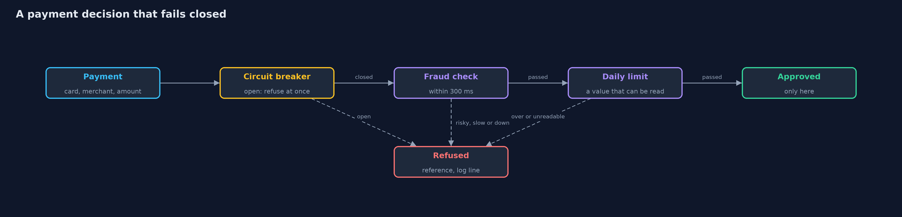
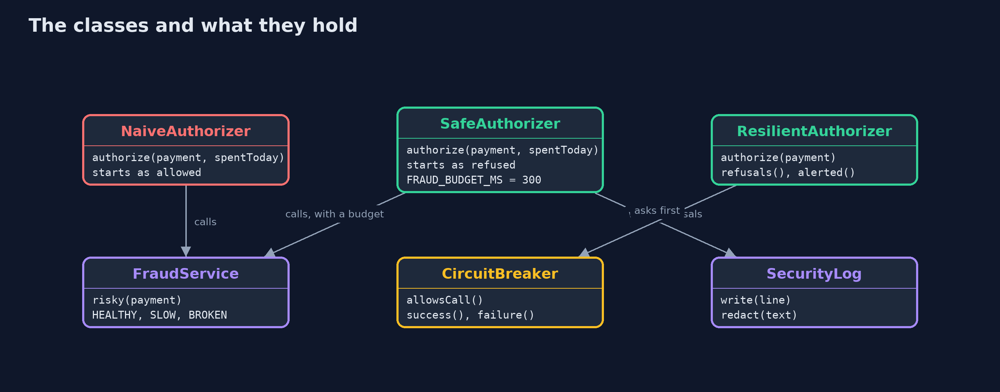
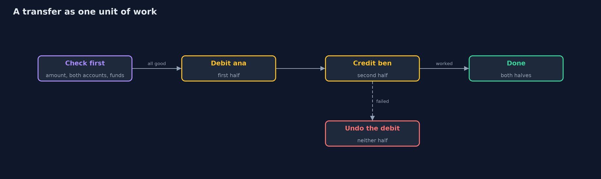
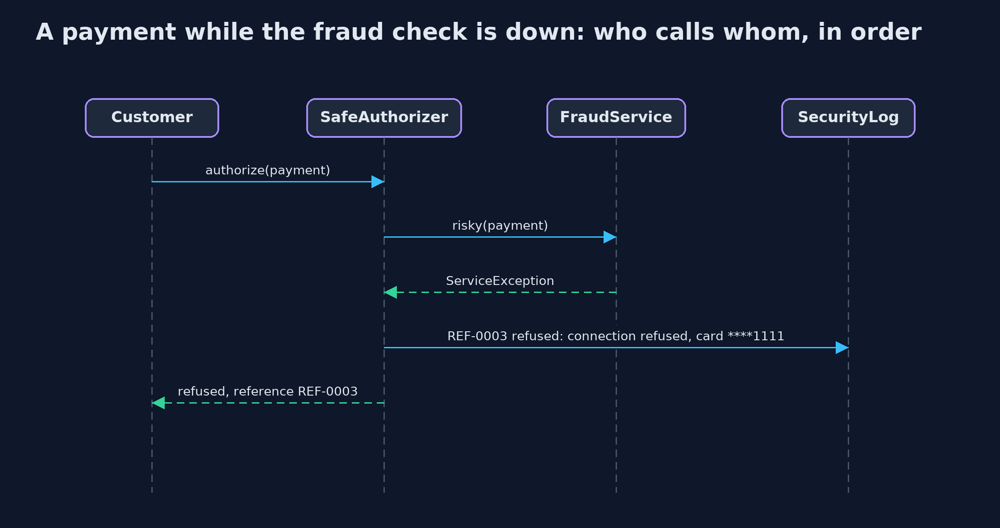

Failing Closed: Secure Error Handling
src/main/java/com/jk/explore/security/failclosed/
├── CircuitBreaker.java A circuit breaker that fails closed
├── ConnectionPool.java A small pool of database connections
├── Decision.java The answer to a payment: approved or refused, with the reason and the reference the customer can quote
├── ErrorPages.java What the customer is told when something goes wrong
├── FailClosedDemo.java Runs the bank story in five numbered acts and prints exact, repeatable results
├── FraudService.java The fraud-check service, simulated
├── Ledger.java Account balances in cents
├── NaiveAuthorizer.java How payments get approved by accident
├── Payment.java A card payment the bank is asked to approve
├── References.java Reference numbers that a customer can quote and support can find in the log
├── ResilientAuthorizer.java Failing closed without failing slowly: a time budget per call, at most one retry for a call that failed fast, a circuit breaker that refuses at once when the fraud service is down, and a count of refusals by reason so that someone is alerted
├── SafeAuthorizer.java Failing closed
├── SecurityLog.java The bank's internal log
├── ServiceException.java A dependency that failed: it threw, or it did not answer in time
├── SimClock.java A clock in milliseconds that only moves when told to, so timeouts and cool-downs are exact and repeatable
├── TimeoutException.java A dependency that did not answer within its time budget
└── Transfers.java Two ways to move money between accounts when the second half can fail
Most security checks are written for the case where everything works; when a dependency times out, an exception skips a step or half a transfer fails, the code must refuse, undo, release and say nothing useful to an attacker, and that safety costs availability that has to be paid for with budgets, breakers and alerts.
Mishandling of exceptional conditions is new in the OWASP Top 10 (2025, A10). Security checks are usually written and tested for the case where everything works. The attack is the other case. A dependency times out, and a catch-all quietly lets the request through. An exception skips an authorization step, and the code carries on as if the step had passed. A transfer fails halfway, so money leaves one account and never reaches the other. A connection is never given back, and the service stops. An error page shows a stack trace with internal host names and a card number.
Failing closed is the answer. The decision starts as no, and only a check that ran and passed turns it into yes. Timeouts and exceptions become refusals with a reference the customer can quote. Changes that belong together happen as one unit of work, and resources are released on every path with try-with-resources. The customer sees a generic message, and the log keeps the detail, without secrets.
The demo follows a bank's payment check through each failure, and ends with the cost: failing closed costs availability, and the ways to pay for it.
Maps to: OWASP Top 10 2025 A10 (Mishandling of Exceptional Conditions); CWE-636 (not failing securely), CWE-755 (improper handling of exceptional conditions), CWE-703 (improper check or handling of exceptional conditions), CWE-209 (error messages containing sensitive information); OWASP ASVS 5.0, the chapter on logging and error handling.
The idea in everyday terms
Think of a bank vault with an electronic lock. When the power fails, the door can either lock itself or open itself. A vault that opens during a power cut is a vault that a burglar can open by cutting the power. Failing closed is the vault that locks, and the price is that nobody gets in until the power is back, which is why the bank also has a generator and an alarm.
The scenario
An online bank approves card payments by asking a fraud-check service and checking the customer's daily limit, moves money between accounts, and shows error pages. The demo breaks each dependency in turn, on a simulated clock, and watches what the code does when something goes wrong.
Run
./gradlew run
The demo tells the story in 5 acts, each printing exact numbers that the tests check:
| Act | What it shows |
|---|---|
| 1. Failing open | A risky 1500.00 payment is approved while the fraud check is down, and a 4500.00 payment passes a 2000.00 daily limit because the spent-today value cannot be read. |
| 2. Failing closed | The decision starts as no: a coffee is approved, the risky payment is refused, and a fraud check that is down, too slow for its 300 ms budget, or a value that cannot be read are all refusals with a reference. |
| 3. Failing halfway | A transfer of 250.00 to a frozen account makes 250.00 vanish; as one unit of work nothing changes; three failed updates leak all three connections, and try-with-resources gives them back. |
| 4. What the customer is told, and what the log keeps | The raw error page names an internal server, the full card number and code lines; the safe page gives a reference, and the log keeps the reason and the last four digits only. |
| 5. The bill, and how to pay it | During a slow outage 10 coffees are refused after 50 seconds of waiting; a breaker that opens after 3 failures refuses the rest at once after 15 seconds, raises an alert, and closes again when the service is back. |
Test
./gradlew test
17 tests in AuthorizerTest, DemoRunsTest, ErrorsAndBreakerTest, PartialFailureTest. Timeouts and cool-downs run on a simulated clock and every service fault is injected, so the golden output is the same on every run and no network is used.
What the simulation got right, and what it left out
The fraud service, the ledger and the connection pool are simulations driven by a clock that only moves when told to, so timeouts, cool-downs and outages are exact and the output is the same on every run. The card number is a well-known test number, and the log keeps only its last four digits.
Technologies and versions
Every version below is pinned in the project's build files and was the latest stable release when the project was built.
| Technology | Version | Used for |
|---|---|---|
| Java | 25 | the language and runtime; a Gradle toolchain finds or downloads the JDK |
| Gradle | 9.8.1 (wrapper) | build and run; nothing to install, the wrapper downloads it |
| org.junit.jupiter:junit-jupiter | 6.1.3, set by junit-bom | JUnit 5: the tests (tests only) |
| org.junit.platform:junit-platform-launcher | 6.1.3, set by junit-bom | JUnit platform launcher, which Gradle needs to run the tests (tests only) |
| videokit | repository tool (tools/videokit) |
the narrated video and animation: Piper en_US-amy-medium, speed 0.8, longer pauses (the amy-slow voice) |
Learning Material
| Document | What it is for |
|---|---|
| Problem statement | the situation and what the project must show |
| Prerequisites | what you need to know first |
| Failing Closed: Secure Error Handling, explained | the acts in prose |
| Session guide | a one-hour lesson with exercises |
| Animated walkthrough | the acts step by step, narrated |
| Threat model | what is protected, who could harm it, and how, using STRIDE |
| Spec | what this project must be true of |
| Expected output | the golden demo output every test and every port checks against |
The idea in one picture
Every path that is not an explicit, timely pass leads to a refusal with a reference.

Where each piece sits
Two authorizers with the same checks: one starts from yes, one from no.

How the data moves
Check what can be checked, then change both sides, and undo the first if the second still fails.

Who calls whom, in order

Video
video/fail-closed-error-handling-explained.mp4 (with .m4a audio and .srt subtitles) is built by video/build_video.sh. Rendered media is not committed.
What it costs
- Failing closed costs availability. When the fraud check is down, no payment goes through. Ten coffees during a slow outage are all refused, and customers notice.
- Budgets and retries need tuning. A time budget that is too short refuses healthy calls; a retry that is too eager doubles the load on a struggling service.
- A circuit breaker can hide an outage. Refusing fast is better than waiting, but only if someone is alerted that refusals are rising.
- Undo is not always possible. A compensating step works inside one bank's ledger; across systems it needs idempotent operations and reconciliation.
- Generic messages slow support down. The reference only helps if support can search the log for it.
When this is too much
For a check that protects nothing important, failing open may be an acceptable business choice, as long as it is a written decision and not an accident. For payments, access control and anything that moves money or data, failing closed is the default, and the budgets, breakers and alerts are what make it bearable.
Where you have already met this
catch (Exception e) { }in code reviews, and logs full of swallowed exceptions.- Outages where a payment, login or licence check let everything through while a service was down.
- Error pages with a stack trace, a database host name or a SQL fragment.
- Circuit breakers and timeouts in libraries such as Resilience4j, and the alerts that watch them.
Where this sits
This project is the second in the intermediate track's secure-configuration module (secure-configuration), after security-misconfiguration. It builds on the beginner project password-attacks-and-defences, whose bank refuses rather than guesses.